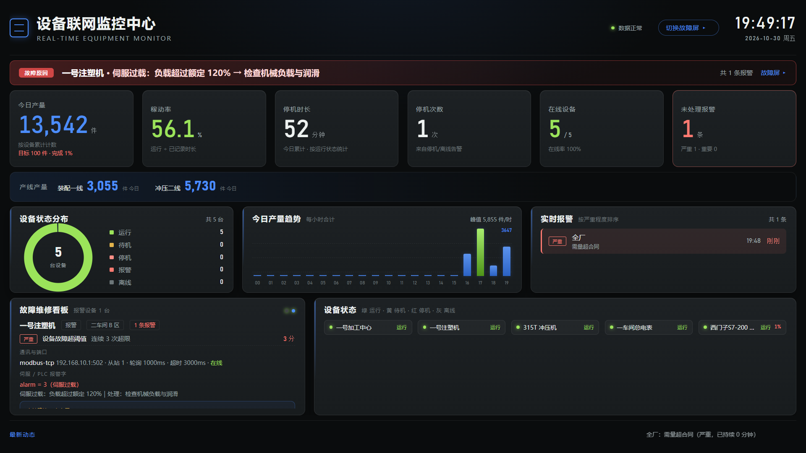
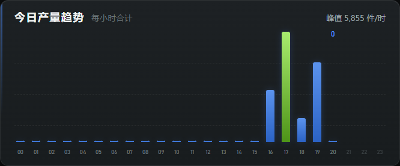
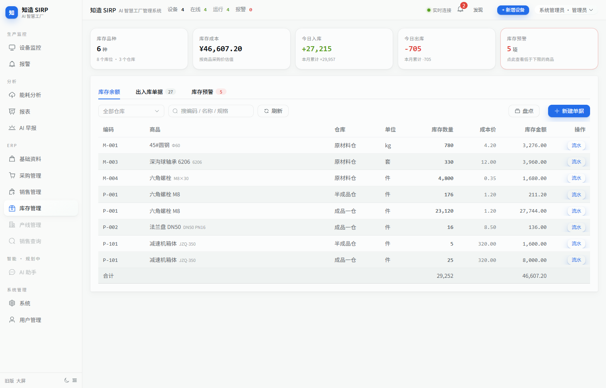

知
知造 KnowFab-SIRPv1.0
跑在自己电脑上的工厂数据系统 · 接 PLC 读产量、故障、电耗，联动库存与单据
让老机器自己报产量
它解决什么问题 中小工厂的数据，现在散在四个地方
01
产量在 PLC 里
寄存器里只有累计值，没人知道今天做了多少
02
故障在师傅脑子里
停机了才知道，修了多久全凭记性
怎么跑起来 一根网线的事
老 PLC
Modbus TCP / OPC UA / 485
程序一行不改
→
→
→
真机效果 接的就是一台跑了十几年的 S7-200 SMART

车间监控大屏：24 小时完整产量轴、故障原因置顶、底部实时播报

今日产量趋势：00~23 点整轴，未到的时段是空槽

库存余额：设备产出自动入库，2 秒刷新
硬核承诺
不改 PLC 程序，只读不写
不用 Docker，单文件即服务
不用装数据库，自带存储
不联网也能用，车间断网照跑
数据不出厂，全在自己电脑
AGPL-3.0 开源 + 商业授权
本项目开源（AGPL-3.0）；闭源商用 / SaaS / 白标需购买商业授权